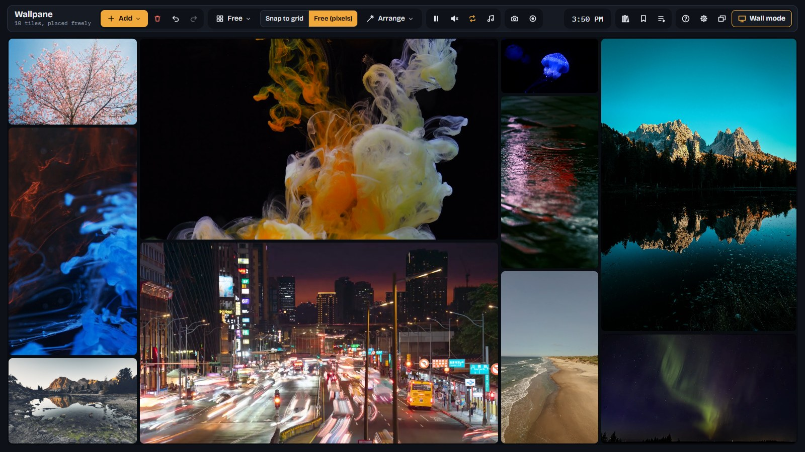
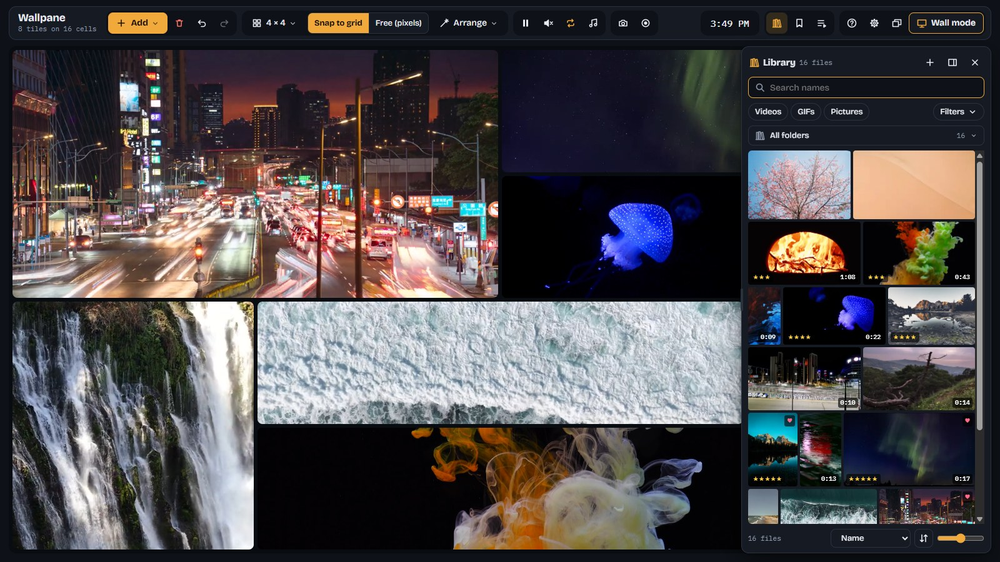
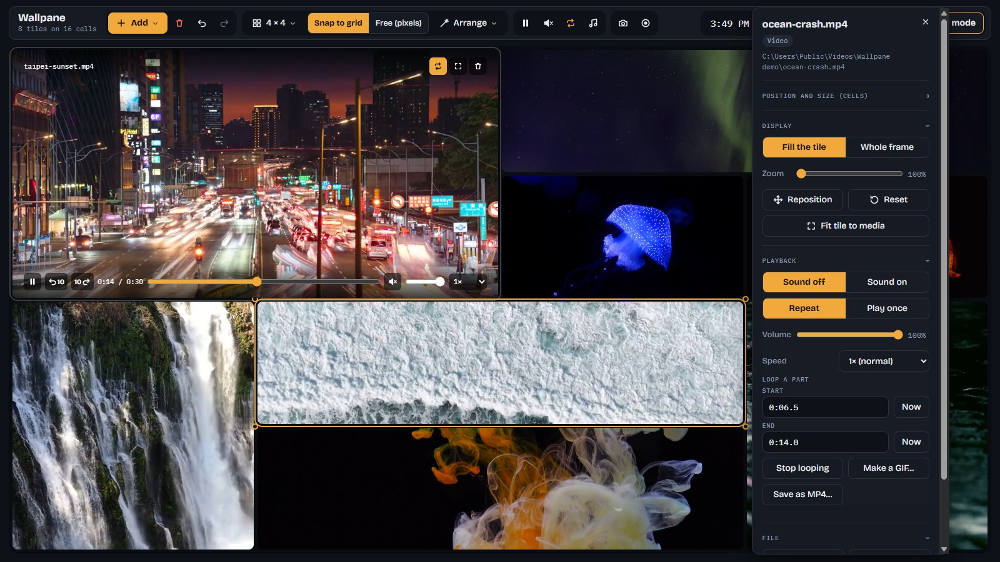

All your videos,
playing at once.
Wallpane puts your own videos, pictures and GIFs side by side on a wall that fills the screen. Arrange it on a grid or freely, let whole folders play in turn, and leave it running on a TV. Everything stays on your PC.
Windows 10 and 11 · 64-bit · open source (GPL-3.0)
A wall you arrange, tile by tile.
Drop files or whole folders from Explorer and they become tiles. Every tile plays on its own: its own file, framing, sound and speed.
Grid or free, your way
Snap tiles to a grid, or place and size them by the pixel. Drag an edge and the others make room. Fill the wall turns everything into a collage where each file keeps its own shape.

Folders and your library
Give a tile a folder and it plays the files in turn, with its own timing and crossfade. The library shows every file you keep as a thumbnail, with stars, hearts and tags. Drag what you want onto the wall.

Every tile, just so
Zoom and frame what a tile shows, loop part of a video, set its speed and volume. AVI, WMV and other videos that won't play as they are get converted for you, with FFmpeg built in.

A wall on its own
Wall mode (F11) fills a display and keeps it awake. With Start with Windows, the wall comes back full screen after a restart. Cast it to a TV or projector.
Record and screenshot
Record the wall as it plays, from one click to the next, up to 4K. Take a screenshot, or save a looped part as a GIF or MP4.
Gone in a moment
One key or mouse button hides every wall window from any program and silences it. The same again brings it all back.
It all stays on your PC.
Offline
Wallpane plays files from your own drives. It goes online only when you click Check for updates, to ask GitHub for the newest version. No account, no ads, no tracking.
Your files untouched
Saved walls only point to your files. Copies, thumbnails and previews go into Wallpane's own cache.
Everything inside
FFmpeg comes with it, so converting and thumbnails work offline, with nothing more to download.
Open source
Free software under the GPL. Read the code, build it yourself, or help shape it on GitHub.
Get Wallpane.
Free, for Windows 10 and 11 (64-bit). About 180 MB, FFmpeg included.
Installer
Installs Wallpane with a Start menu entry and an uninstaller. Best for most people.
Download installerPortable
One file that runs from anywhere, even a USB stick. Nothing is installed.
Download portableWallpane isn't code-signed yet, so Windows SmartScreen may say "Windows protected your PC" the first time. That is about the missing signature, not about anything found in the file.
Good to know.
Is it really free?
Yes. Wallpane is free software under the GNU GPL, version 3 or later: no trial, no ads, no paid tier. If it's useful to you, you can support it on GitHub Sponsors; it stays free either way.
Which files does it play?
MP4, WebM, MOV, M4V, MKV and OGV videos as they are; AVI, WMV, FLV, MPEG, 3GP and others after a quick conversion it makes by itself, leaving your file as it was. Pictures: JPEG, PNG, GIF, WebP, AVIF, BMP and SVG. HEIC and camera RAW photos need converting to JPEG first.
Does it need the internet?
No. Everything it needs, FFmpeg included, comes with the download. It goes online only if you click Check for updates in Settings.
Can I use more than one screen?
Yes. Open another wall window for each screen; each has its own wall and settings, and wall mode fills the display you pick. A TV or projector works too, by cable or Miracast.
Is there a Mac or Linux version?
Not yet. Wallpane is for Windows 10 and 11.
Where are my walls kept?
On your PC, in your Windows user folder (%APPDATA%\Wallpane). Saved walls can be exported to a file and imported on another PC.